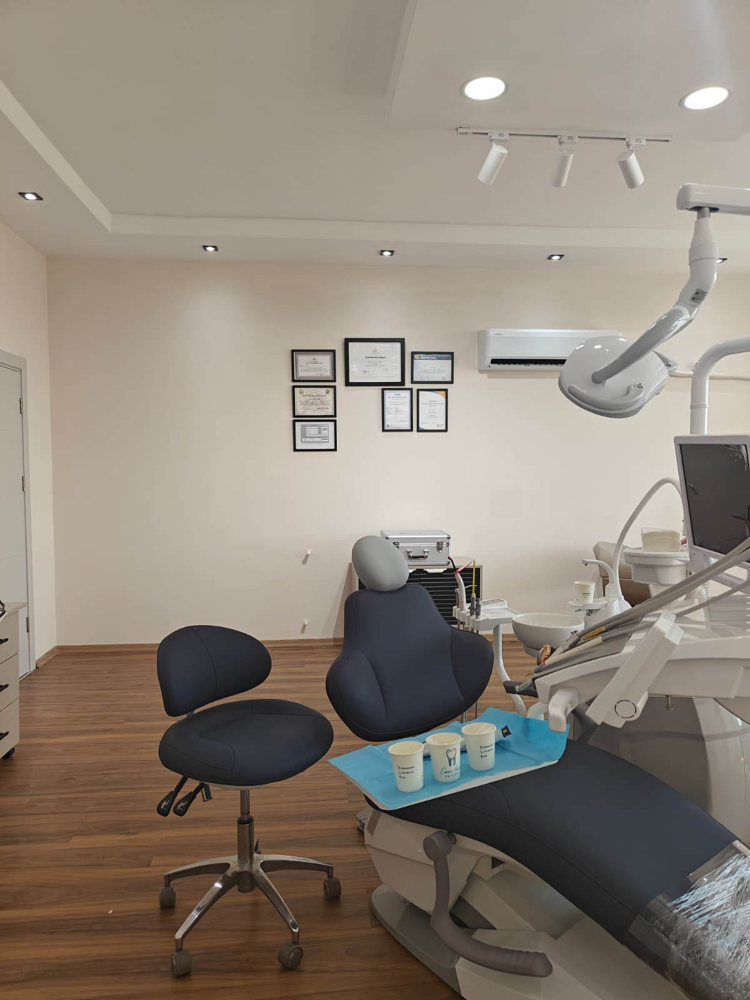
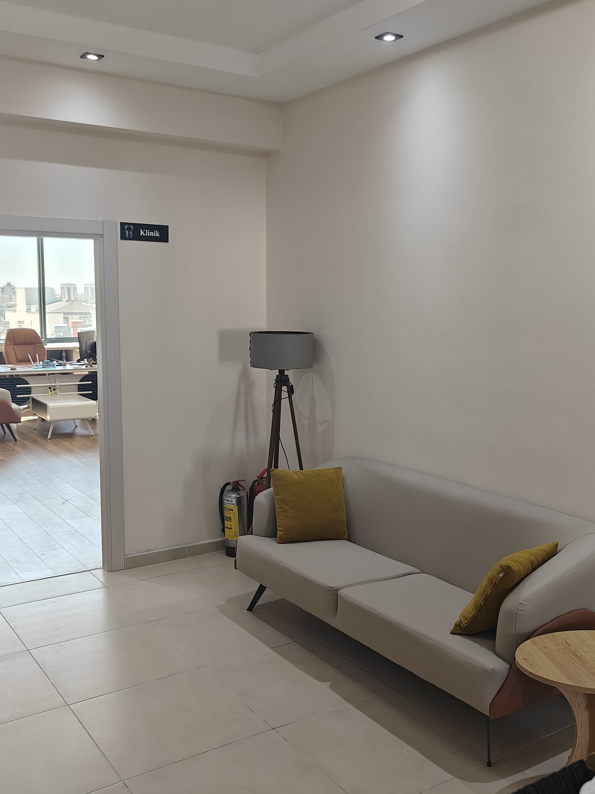
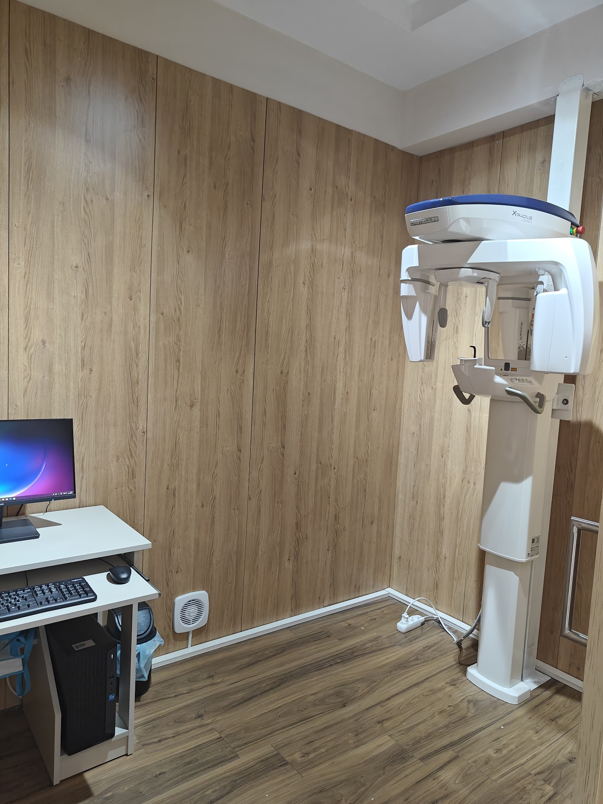
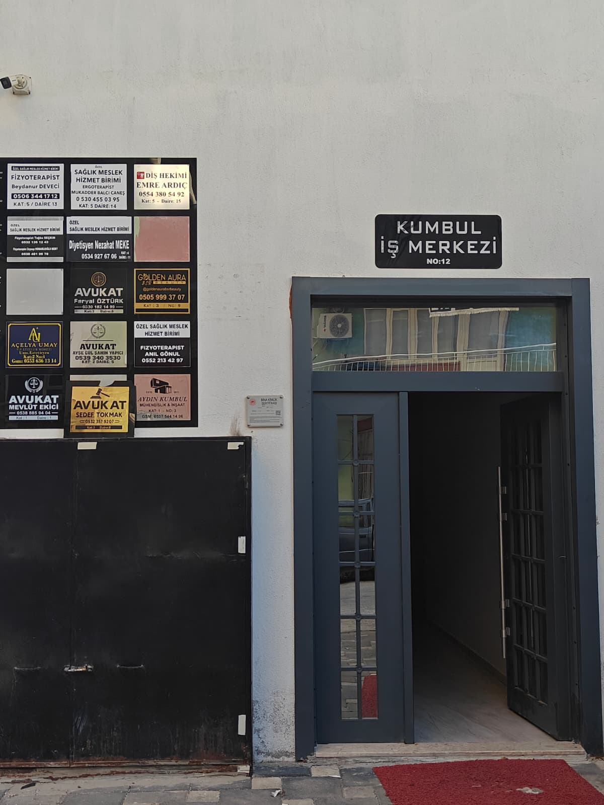

Kliniğimizde her hastamızı dikkatle dinliyor, tedavi sürecinin her adımını anlaşılır bir dille paylaşarak planlıyoruz. Sağlıklı bir gülüş için modern diş hekimliği uygulamalarını titizlikle sunuyoruz.
Selfie yükleyin, dişlerinizi çerçeveleyin, kaydırın. Fotoğrafınız telefonunuzdan çıkmaz.
Önce fotoğrafınızı yükleyin.
Simülasyon fikir vermek içindir; gerçek sonuç muayene ve dijital gülüş tasarımı (DSD) ile planlanır.
Tedavilerinizi seçin: tahmini fiyat aralığı, Antalya'da kalmanız gereken gün ve gün gün planınız anında çıksın.
Enfekte olmuş veya hasar görmüş diş pulpasının temizlenerek dişin ağızda korunmasını amaçlayan endodontik uygulamalar.
Gülüş analizi doğrultusunda E-Max lamina, zirkonyum kaplama ve estetik dolgu gibi protetik planlamalar.
Çürük veya aşınma kaynaklı doku kayıplarının uygun kompozit materyallerle restore edilmesi işlemi.
Diş eti çekilmeleri, kanamalar ve tartar birikimlerinin giderilmesine yönelik koruyucu diş eti bakımı.
Diş minesinde zamanla oluşan renk değişikliklerinin klinik ortamda hekim kontrolünde giderilmesi.
Ağız ve çene yapısının detaylı kontrolü ile olası diş problemlerinin erken dönemde tespit edilmesi.




İşlemlere başlamadan önce mevcut durumu değerlendirir, uygulanacak adımları açık bir dille paylaşırız.
Her hastanın ihtiyaçları farklıdır; muayene sonrasında size en uygun tedavi rotasını birlikte belirleriz.
Klinik ortamımızda ve kullanılan tüm ekipmanlarda hijyen kurallarına azami özen gösteririz.
Güler yüzlü ekibimiz ve rahat klinik yapımızla diş hekimi ziyaretlerinizi konforlu bir deneyime dönüştürürüz.
📍 Kumbul İş Merkezi, Merkez, 2145. Sk. no:12 Kat:5 Daire no:15, 07500 Serik/Antalya
🕑 Pzt–Paz 24 saat
360° GÖRÜNÜM
Görüntüyü fareyle ya da parmağınızla çevirin; bulunduğumuz sokağı ve girişimizi 360° gezin, gelirken zorlanmayın.
Görüntü: Google Street View · Yol tarifi al